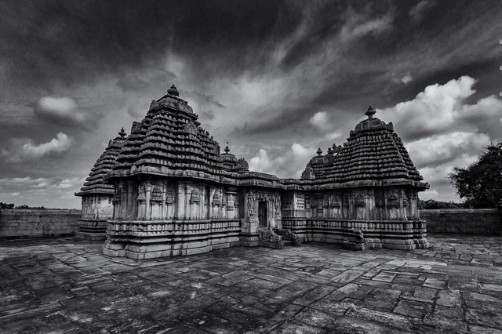

Doḍḍagaddavaḷḷi – A Requiem For Kāḷamma
२०२०-११-२७ शुक्र:
(Written in the aftermath of Doḍḍagaddavaḷḷi Temple descecration in Swarajya.)
The Lakṣmī Dēvī temple in Doḍḍagaddavaḷḷi finished in 1113 CE, is among the oldest of the temples built in the Hoysaḷa era. Commissioned by the Kāśmīri merchant Kullahana Rāhuta & his wife Sahajādevī in the time of Viṣṇuvardhana, the grāma became ‘Dakṣiṇa Abhinava Kolhapura’ by having the first grand temple for Lakṣmī in the South.
That perhaps was the high point for the sleepy town’s fortunes. It figures nowhere else in the annals of history, except perhaps in footnotes for being the birthplace of the Vīṇā legend Doraiswamy Iyengar.
Ignored and irrelevant for much of its existence, the temple, much like the land and the people, witnessed and suffered the past millennia, in much the same way. The civil strife of the past millennia, destruction in the period of violent Turkic-Islamic colonialism, loss of finances, theft of historical artifacts, systemic destruction by the secular state, and the apathy of the local community - it’s all there in this microcosm.
The agrahāra that leads up to the temple looks deserted. It is full of geriatric ‘Bakery’ Iyengars who were transplanted here from Tamiḷ dēśa (unlike the Hebbar variety) sometime in the past – some say during the great rampage of Malik Kafur or Madurai Sultanate, others say much later.

The lone smārtha arcaka who was supported by the earnings from the few acres of temple land, was pushed into penury in the wake of Indira Gandhi’s tenancy reforms. The temple land was usurped by the locals during the time of Devaraj Urs, and the archaka’s replacement never came.
In the span of a mere generation, the 900 year old temple was left without anyone to even light a lamp for the ostensible grāma dēvate. The arcaka’s living quarters, situated next to the rangamaṇṭapa, eventually gave in to higher entropy also. The last of the smārtha families left town about a decade ago.
The temple, known locally as ‘Kāḷammana Dēvasthāna’, was ‘abandoned’ for all practical purposes.
The temple is quite strange in itself. The main maṇṭapa originally housed Lakṣmī, Kālī, Kēśava, and a Śiva liṅga, with Kālabhairava given special accommodation outside it. It is the only Hoysaḷa temple of its kind, both in architecture and in terms of the deities housed.
Kēśava, situated in front of Kālī, was apparently stolen 2-3 centuries prior and is now replaced by a small vigraha of Kālabhairava. Legend has it that it was stolen by people from a nearby village; that the mūrti was abandoned in a lake; that the blood line of the robbers ended. After the tragic events of the recent past, only Lakṣmī and Śiva remain.
Kālabhairava, who used to be isolated in his own maṇṭapa, was stolen only a few decades back. Rumour has it that his immigration to the ‘promised land’ fell apart at an airport somewhere, and that he now spends time amongst fellow detainees in a nameless government warehouse in Bengaḷūru.
The few vigrahas on the temple’s exterior are either broken entirely or have had their nose-chipped with a sword – a tell-tale sign of Islamic fanaticism. The four minor shrines that dot the outer walls are all empty.
The ASI which has shown ‘renewed’ interest in the temple in recent years, promptly spent its last grant ‘beautifying’ the temple by sandblasting inscriptions off the walls and filling up crevices with vulgar concrete. The doors to the inner mantapa continue to stand uneven on centuries old hinges, and remain incapable of being locked properly even.
The ‘miscreants’, who struck rather aptly on ‘Tipu Jayanti’, only had to jump the outer walls on the fateful day – the inner doors we are told were left completely unlocked.
The grāma itself whose own annual jātre (temple-fair) is entwined with the temple and other small shrines nearby, has treated the temple with apathy. Plans to support an arcaka never materialised even when footfall to the temple increased manifold. The devotees and seers who frequented the Dēvī, Kālī or Lakṣmī didn’t bother about the temple’s ecosystem or the community surrounding it.
The Iyengars do not have a history with the temple – they have their own mūrti of Lakṣmī Janārdana temple a few hundred meters away – who also lost a few acres in the ongoing ‘cultural revolution’. In recent years, a relative of Doraiswamy started doing the part-time role of a archaka of the ancient temple without much support, and against much advise.
The footfall had begun increasing in recent years with growing clout of Kālī (note, not Lakṣmī), and the ASI, which can neither fix doors, nor provide basic security, instead issued a diktat ‘banning’ house construction or repair within 100m of the temple – for further ‘beautification’ no doubt.
One hand of the state gives away temple land for ‘social justice’; the other usurps other people’s land, ostensibly, for the temple’s ‘safety’.
The destruction of the Kālī vigraha continues to draw in all the babus of the Anglo-Indian kleptocracy into the town. Their local retainers, after a quick rap by the all-knowing, nameless, ‘exam pass’ civilising rulers, went ahead and balded the plants and the lawn. The doors remain, yet the same, but now tied with chains.
The ‘orders’ from the ‘superiors’ have now led to the complete closure of the temple, both to the locals and the media – a common tactic by ‘public servants’ to hide their ineptitude, it’d seem. The ASI plans to glue together the Kāḷī vigraha and place it inside the garbhagṛha again, and turn it into yet another mausoleum for the dying civilisation.
The ‘part-time’ arcaka and the local community will likely become further alienated from the now rather ironically named Kāḷammana Dēvasthāna, until the sole Lakṣmī takes flight and ends up in a swanky private museum in New York or London, thus putting to end, the ASI and the Indian state’s, obsequious attempts at satisfying foreign eyes.
Cry priya Bhārata, cry.
(The author notes that even at Haḷēbīḍu, the archaka remains unsupported; he serves only Hoysaḷēśvara, while Śāntalēśvara—and even more so Kēdārēśvara—remain museum pieces for all practical purposes.)